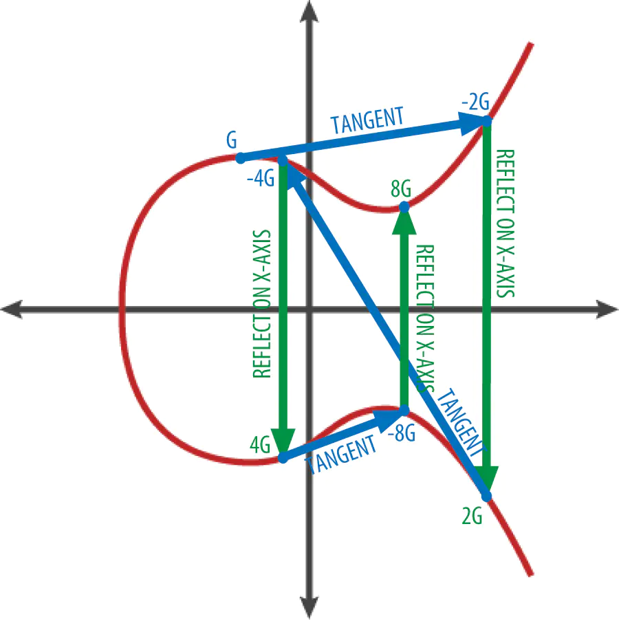

ecc.ecdh
Table of Contents
1 介绍
秘钥生成
// GenerateKey generates a public and private key pair. func GenerateKey(c elliptic.Curve, rand io.Reader) (*PrivateKey, error) { k, err := randFieldElement(c, rand) if err != nil { return nil, err } priv := new(PrivateKey) priv.PublicKey.Curve = c priv.D = k priv.PublicKey.X, priv.PublicKey.Y = c.ScalarBaseMult(k.Bytes()) return priv, nil }
传入一个 椭圆曲线 和一个 io.reader 会得到一个 private
type PrivateKey struct { PublicKey D *big.Int } big.int 大数字, 多精度...
生成公钥 私钥
private, err := ecdsa.GenerateKey(elliptic.P256(),rand.Reader) if err != nil{ //todo } public := private.PublicKey
针对eth的椭圆曲线
图像为 : y2 = x3 +ax + b
上文使用的是p256 而 相同的还有p521 p384 ...
差别 : 是素数的不同(越大椭圆就会越大).
在代码里面 initP256 会定义 对于每个椭圆点的最大值 (x , y 的最大值)
所以在得到一个椭圆曲线以后,会确定a 和 b 的值,像spec265k1 a=0 b=7,
func initP384() {
// See FIPS 186-3, section D.2.4
p384 = &CurveParams{Name: "P-384"}
p384.P, _ = new(big.Int).SetString("39402006196394479212279040100143613805079739270465446667948293404245721771496870329047266088258938001861606973112319", 10)
p384.N, _ = new(big.Int).SetString("39402006196394479212279040100143613805079739270465446667946905279627659399113263569398956308152294913554433653942643", 10)
p384.B, _ = new(big.Int).SetString("b3312fa7e23ee7e4988e056be3f82d19181d9c6efe8141120314088f5013875ac656398d8a2ed19d2a85c8edd3ec2aef", 16)
p384.Gx, _ = new(big.Int).SetString("aa87ca22be8b05378eb1c71ef320ad746e1d3b628ba79b9859f741e082542a385502f25dbf55296c3a545e3872760ab7", 16)
p384.Gy, _ = new(big.Int).SetString("3617de4a96262c6f5d9e98bf9292dc29f8f41dbd289a147ce9da3113b5f0b8c00a60b1ce1d7e819d7a431d7c90ea0e5f", 16)
p384.BitSize = 384
}
在生成私钥时 会使用rand.Reader 生成随机数 在eth 中 G 值 是确定的 所以公钥的生成 是 使用G值的去乘以 我们锁定私钥的x,y 假定 我们的私钥是 K(x,y) 使用的曲线是 spec256k1 G是一个固定坐标(离散数学,我没整明白) 那么 公钥 就是 私钥 的两个点 和 G 的 相乘 eg: Kx * G == Kx + Kx ...+Kx(g个kx相加) (椭圆曲线的相加是) Kx + Kx 的值 : ( 在 椭圆上 点出两个点 并交与 椭圆(有且只有一个) 然后沿x做h对称 重复此操作 ) (若两个相同的值 则沿此点做切线 交椭圆与一点,并做切线)

为什么安全? 假设私钥是 K 公钥是 P P = K * G(* 代表 上文说到的乘法) 公钥已知的情况下 K = ? 也是很难计算出的 因为我们无法倒着推 但是可以顺着验证 比如 我们知道私钥 K 我们可以很方便的进行公钥的验证
加密
数据加密, 假设将一串sha256的string 进行传输 User1 : K1 , P1 (用户1 有一个公钥 有一个私钥) User2 : K2 , P2 (用户2 有一个公钥 有一个私钥) 传输的时候 我们可以知道 对方的公钥 User1 ==> K1 * P2 ==> K1 * (K2 * G) User2 ==> K2 * P1 ==> K2 * (K1 * G) 两个式子是相等的 所以我们可以用它来加密数据 就可以非对称 加密 换成对称加密了(两个人的公共秘钥)
签名
签名是用私钥去 和 需要签名的数据做运算 得到一个签名数据 K * Data = N 私钥 * Data = N(签名数据) 验证 : 公钥 * Data = K * G * data 而 K * Data = N 所以 : 公钥 * Data = N * Data 所以我们 验证签名的时候 有公钥就可验证这个值
2 一些简单的代码实现
2.1 秘钥生成
生成
private, err := ecdsa.GenerateKey(elliptic.P256(),rand.Reader) if err != nil{ //todo } public := private.PublicKey
eth 把key 转换为 []byte
eth.FromECDSAPub(&public) eth.FromECDSA(private) func FromECDSAPub(pub *ecdsa.PublicKey) []byte { if pub == nil || pub.X == nil || pub.Y == nil { return nil } return elliptic.Marshal(S256(), pub.X, pub.Y) }
验证
//使用ECC算法,对密文和明文进行匹配校验 func VerifyCryptEcc(srcStr, cryptStr string) (bool, error) { decodeBytes, err := hex.DecodeString(cryptStr) if err != nil { return false, err } //解密签名信息，返回椭圆曲线参数：两个大整数 rint, sint, err := UnSignCryptEcc(decodeBytes) if err != nil { log.Println("err", err) } publicKey := Decode58([]byte("")) pubket, err := eth.HexToECDSA(string(publicKey)) //使用公钥、原文、以及签名信息解密后的两个椭圆曲线的大整数参数进行校验 verify := ecdsa.Verify(&pubket.PublicKey, []byte(srcStr), &rint, &sint) return verify, nil }
//使用ECC算法解密,返回加密前的椭圆曲线大整数 func UnSignCryptEcc(cryptBytes []byte) (rint, sint big.Int, err error) { reader, err := gzip.NewReader(bytes.NewBuffer(cryptBytes)) if err != nil { err = errors.New("decode error," + err.Error()) } defer reader.Close() buf := make([]byte, 1024) count, err := reader.Read(buf) if err != nil { err = errors.New("decode read error," + err.Error()) } rs := strings.Split(string(buf[:count]), "+") if len(rs) != 2 { err = errors.New("decode fail") return } err = rint.UnmarshalText([]byte(rs[0])) if err != nil { err = errors.New("decrypt rint fail, " + err.Error()) return } err = sint.UnmarshalText([]byte(rs[1])) if err != nil { err = errors.New("decrypt sint fail, " + err.Error()) return } return }
// Verify verifies the signature in r, s of hash using the public key, pub. Its // return value records whether the signature is valid. func Verify(pub *PublicKey, hash []byte, r, s *big.Int) bool { // See [NSA] 3.4.2 c := pub.Curve N := c.Params().N if r.Sign() <= 0 || s.Sign() <= 0 { return false } if r.Cmp(N) >= 0 || s.Cmp(N) >= 0 { return false } e := hashToInt(hash, c) var w *big.Int if in, ok := c.(invertible); ok { w = in.Inverse(s) } else { w = new(big.Int).ModInverse(s, N) } u1 := e.Mul(e, w) u1.Mod(u1, N) u2 := w.Mul(r, w) u2.Mod(u2, N) // Check if implements S1*g + S2*p var x, y *big.Int if opt, ok := c.(combinedMult); ok { x, y = opt.CombinedMult(pub.X, pub.Y, u1.Bytes(), u2.Bytes()) } else { x1, y1 := c.ScalarBaseMult(u1.Bytes()) x2, y2 := c.ScalarMult(pub.X, pub.Y, u2.Bytes()) x, y = c.Add(x1, y1, x2, y2) } if x.Sign() == 0 && y.Sign() == 0 { return false } x.Mod(x, N) return x.Cmp(r) == 0 } 这里我们的key 使用 hex 把证书分解 成 r s ..然后去Verify